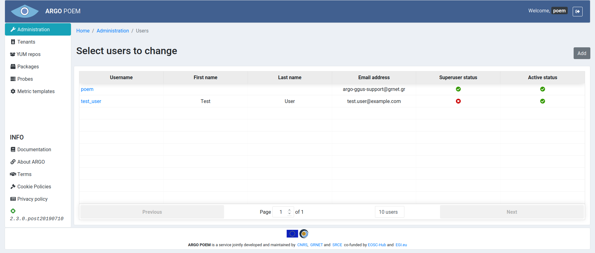

Users
List of users
Users page is only accessible through Administration page. It is shown in the image below.

User details
By clicking user's name, one can access its details, shown in the image below.

The first field, Username is mandatory. It must fulfill the following conditions:
- must be 30 characters or fewer,
- can contain letters, numbers and @/./+/-/_ characters.
When adding a new user (shown in the image below), there are two more mandatory fields (Password and Confirm password): * Password: * must contain at least 8 characters, * cannot be entirely numeric, * Must match Confirm password field.

Personal info section
Personal info section contains three self-explanatory fields:
- First name,
- Last name,
- Email - mandatory field.
Permissions section
There are two checkboxes in Permissions section. First checkbox sets superuser status - only users with this permission can access Administration page and make changes to users. By removing Active status from user, that user is no longer able to log in to POEM.